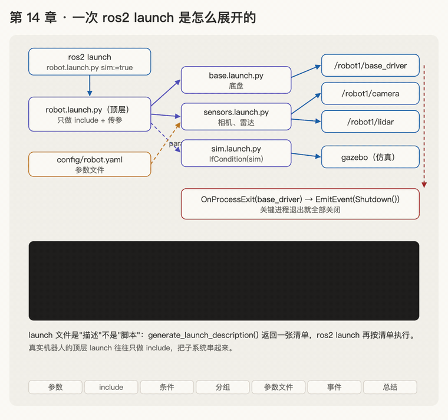

第 14 章 · launch 进阶、测试与调试
本地运行
git clone https://github.com/wikieden/ros2-from-scratch
cd ros2-from-scratch/code/notebooks
pip install jupyterlab torch numpy
jupyter lab ch14_launch_subst.ipynb也可以下载后直接用 VS Code 打开 .ipynb 运行。需要 GPU 的章节在 Colab 里选「代码执行程序 → 更改运行时类型 → GPU」。
本章回答：真实机器人的 launch 文件动辄几百行，怎么组织？参数、条件、"某个节点挂了就全关"怎么写？ROS 2 程序怎么写自动测试？节点崩了怎么拿到崩溃位置？回调到底花了多久怎么量？
讲解日期：2026-11-13 · 上一章：第 13 章 URDF 与 RViz · 下一章：第 15 章 实时与 ros2_control 架构
对应原文：ros2_documentation/source/Developer-Tools/Launch/下的Using-Substitutions.rst、Using-Event-Handlers.rst、Using-ROS2-Launch-For-Large-Projects.rst；ros2_documentation/source/Developer-Tools/Debugging/Testing/Integration.rst；ros2_documentation/source/Developer-Tools/Debugging/Getting-Backtraces-in-ROS-2.rst（路径相对ros2/materials/）
对应 study-plan 阶段 E1–E4，动手里程碑 R-M5（lifecycle + launch 事件 + 一个 launch_testing 测试）。
本章缩写：gdb = GNU Debugger（GNU 调试器）；LTTng = Linux Trace Toolkit next generation（Linux 跟踪工具包：ros2_tracing 的底层）；CI = Continuous Integration（持续集成：每次提交自动跑测试）；pytest（Python 测试框架，不是缩写）；unittest（Python 标准库的测试框架）。全部缩写见 附录 · 缩写与术语表
本章先看总图，再分 3 步：
| 步 | 内容 | 状态 |
|---|---|---|
| 0 | 总图：一次 ros2 launch 的展开过程 |
✅ |
| 1 | launch 进阶：参数、替换、条件、包含、分组、事件 | ✅ |
| 2 | 测试：单元测试、colcon test、launch_testing 集成测试 |
✅ |
| 3 | 调试：gdb 拿崩溃栈、日志、ros2_tracing 测回调耗时 | ✅ |
讲解
总图 · 一次 launch 的展开

可交互版：animations/14-launch-expand.html（内置浏览器：http://localhost:8340/14-launch-expand.html）。
关键概念：launch 文件是"描述"，不是"脚本"。 generate_launch_description() 返回的是一张清单（第 3 章），里面的 LaunchConfiguration('x') 之类叫替换（substitution）：写文件时只是个占位，启动时才求值（Developer-Tools/Launch/Using-Substitutions.rst）。所以在 Python launch 文件里不能直接 if LaunchConfiguration('sim') == 'true':，因为那时它还没有值；要用条件动作。
第 1 步 · launch 进阶
依据：Developer-Tools/Launch/ 下的教程及其 launch/ 示例文件（下称"launch 示例"）。
参数（launch argument）+ 替换（launch/example_substitutions_launch.py）：
from launch import LaunchDescription
from launch.actions import DeclareLaunchArgument, TimerAction, ExecuteProcess
from launch.conditions import IfCondition
from launch.substitutions import LaunchConfiguration, PythonExpression
from launch_ros.actions import Node
def generate_launch_description():
turtlesim_ns = LaunchConfiguration('turtlesim_ns') # 占位
return LaunchDescription([
DeclareLaunchArgument('turtlesim_ns', default_value='turtlesim1'), # 声明 + 默认值
Node(package='turtlesim', executable='turtlesim_node',
namespace=turtlesim_ns, name='sim'), # 启动时才代入
TimerAction(period=2.0, actions=[ ... ]), # 2 秒后再做
])
命令行传值：ros2 launch launch_tutorial example_substitutions_launch.py turtlesim_ns:=robot7。ros2 launch <包> <文件> --show-args 列出所有可传的参数。
常用替换和动作：
| 名字 | 作用 |
|---|---|
LaunchConfiguration('x') |
取 launch 参数 x 的值 |
PathJoinSubstitution([FindPackageShare('pkg'), 'config', 'a.yaml']) |
拼出某个包安装目录下的文件路径 |
Command(['xacro ', urdf_path]) |
启动时执行命令，取输出（第 13 章把 xacro 展开成 URDF） |
PythonExpression([...]) |
启动时求一个 Python 表达式 |
IfCondition(...) / UnlessCondition(...) |
条件：满足才执行这个动作（比如只在仿真时启动 Gazebo） |
TimerAction(period=, actions=) |
延时执行 |
ExecuteProcess(cmd=...) |
启动任意命令 |
IncludeLaunchDescription(...) |
包含另一个 launch 文件，并传参 |
GroupAction + PushRosNamespace('ns') |
把一组节点统一放进某个命名空间 |
SetParameter / Node(parameters=[yaml路径, {...}]) |
设参数：可混用 YAML 文件和字典 |
Node(remappings=[('cmd_vel', 'base/cmd_vel')]) |
重映射话题 |
大项目的组织方式（Using-ROS2-Launch-For-Large-Projects.rst，launch/example_main_launch.py）：一个顶层 launch 文件只负责 IncludeLaunchDescription 各子系统（底盘、传感器、导航、机械臂），通过参数把"用哪个机器人型号、是否仿真"往下传；参数统一放 config/*.yaml。
IncludeLaunchDescription(
PathJoinSubstitution([FindPackageShare('launch_tutorial'), 'launch', 'example_substitutions_launch.py']),
launch_arguments={'turtlesim_ns': 'turtlesim2', 'use_provided_red': 'True'}.items())
事件处理（Using-Event-Handlers.rst，launch/example_event_handlers_launch.py）：监听"进程启动 / 有输出 / 动作执行完 / 进程退出 / launch 要关闭"，触发别的动作。
| 处理器 | 什么时候触发 | 典型用法 |
|---|---|---|
OnProcessStart |
某进程启动后 | 模拟器起来后再去调 /spawn |
OnProcessIO |
某进程有输出时 | 看到某行日志再做下一步 |
OnExecutionComplete |
某动作执行完 | 串行步骤 |
OnProcessExit |
某进程退出 | 关键节点退出，就 EmitEvent(Shutdown()) 关掉全部 |
OnShutdown |
launch 整体要关闭时 | 打印原因、收尾 |
官方例子里：turtlesim 窗口被关闭（进程退出）→ 打日志 + 发出 Shutdown 事件，整个 launch 退出。真机上，驱动节点崩了就让整套系统停下，比"半残运行"安全得多。
托管节点 + launch（接第 11 章）：用 launch_ros.actions.LifecycleNode 启动，再用事件处理器监听它的状态变化，"进入 inactive 后自动发 activate"。节点多时直接用 Nav2 式的生命周期管理器更省事。
组件 + launch（接第 10 章）：ComposableNodeContainer(package='rclcpp_components', executable='component_container', composable_node_descriptions=[ComposableNode(...), ...])（Launching-composable-nodes.rst）。
Python / XML / YAML 怎么选（Launch-file-different-formats.rst）：简单的启动清单用 XML / YAML，短且好读；需要复杂逻辑用 Python。Lyrical 给 XML / YAML 加了 string-join、path-join 替换，也支持在 launch 里按条设日志级别（Release-Lyrical-Luth.rst）。
第 2 步 · 测试
依据：Developer-Tools/Debugging/Testing/ 下各页。
三层测试：
| 层 | 测什么 | 工具 |
|---|---|---|
| 单元测试 | 一个函数、一个类，不起 ROS | Python 用 pytest；C++ 用 gtest |
| 节点 / 集成测试 | 把节点真的启动起来，看它对外的话题、服务行为对不对 | launch_testing |
| 静态检查 | 代码风格、拷贝许可证头等 | ament_lint（建包时自动带的 test_depend） |
跑测试（Testing/CLI.rst）：
colcon test --packages-select my_package
colcon test-result --all --verbose # 看结果
colcon test --packages-select my_package --pytest-args -k test_speed_limit # 只跑某个测试
Python 包要在 setup.py 的 extras_require / tests_require 里声明 pytest，测试文件放 test/，函数名以 test_ 开头（Testing/Python.rst）。
集成测试 launch_testing（Testing/Integration.rst）：在一个 Python 文件里：
generate_test_description()：像 launch 文件一样启动被测节点，最后加launch_testing.actions.ReadyToTest()；- 活动测试（active tests）：节点运行期间执行的
unittest.TestCase，比如"发一条cmd_vel，在 2 秒内应该收到位姿变化"，可以用launch_testing_ros的WaitForTopics等待话题； - 关闭后测试（post-shutdown tests）：所有节点退出后检查，比如"退出码都是 0"。
CMake 包里用 add_launch_test(test/my_test.py) 注册，colcon test 一起跑。每次提交都自动跑一遍（CI），是避免"改了 A 坏了 B"的唯一可靠办法。
第 3 步 · 调试
崩溃：用 gdb 拿调用栈（Developer-Tools/Debugging/Getting-Backtraces-in-ROS-2.rst，C++ 节点）：
ros2 run --prefix 'gdb -ex run --args' my_package my_node
# 崩溃后在 (gdb) 提示符下输入：backtrace，从下往上读
launch 里给 Node(...) 加 prefix=['xterm -e gdb -ex run --args']。编译时用 --cmake-args -DCMAKE_BUILD_TYPE=RelWithDebInfo 保留调试信息。Python 节点崩溃本来就有完整的异常栈。
日志（第 3 章）：--log-level debug、rqt_console 过滤、~/.ros/log/ 里翻历史。
"回调到底花了多久"：ros2_tracing（Developer-Tools/Introspection-and-analysis/Tracing/ROS2-Tracing-Trace-and-Analyze.rst）：ROS 2 的核心库里预埋了跟踪点，用 LTTng 记录每次回调的开始、结束、消息发布与接收，开销很小；再用 tracetools_analysis 在 Jupyter 里画出回调耗时分布、端到端延迟。Linux 二进制默认已编入跟踪点；Lyrical 起可用环境变量 TRACETOOLS_RUNTIME_DISABLE=1 完全关掉，还新增了"快照模式"（只在内存里滚动保存，出事时才落盘，像飞机黑匣子）（Release-Lyrical-Luth.rst 对应两节）。
其他排查命令回顾：ros2 doctor --report（第 8 章）、topic info -v（第 7 章）、view_frames（第 12 章）、ros2 lifecycle get（第 11 章）。
和本仓库的连接：R-M10 要量"图像进来 → 动作出去"的端到端延迟和抖动，ros2_tracing 是最准的工具；VLA 策略节点的回归测试（"给定这张图，动作输出的形状和范围对不对"）用 launch_testing 写。
练习与作答记录
练习 14-1（第 1 步）：写一个 launch 参数 use_sim（默认 false），只有 use_sim 为 true 时才启动一个 gazebo 进程。用到哪两个类？
- 作答：（待作答）
练习 14-2（第 1 步）：你想让"底盘驱动节点一退出，整个 launch 就关闭"。用哪个事件处理器、触发什么动作？
- 作答：（待作答）
练习 14-3（第 2 步）：launch_testing 里的"活动测试"和"关闭后测试"各适合检查什么？各举一个例子。
- 作答：（待作答）
练习 14-4（第 3 步）：一个 C++ 节点启动后立刻段错误（segfault）退出，你怎么拿到崩溃位置？
- 作答：（待作答）
口诀
- launch 是描述不是脚本：替换启动时才求值，判断要用
IfCondition。 - 大项目：顶层只做 include，参数往下传，配置进 YAML，命名空间分组。
- 事件：关键进程退出就 Shutdown，别让系统半残。
- 测试三层：pytest 测函数，launch_testing 测节点，ament_lint 查风格；
colcon test一起跑。 - 调试：崩溃 gdb 看栈，行为看日志，耗时用 tracing。
本章复习卡片编号
R34–R35，见 ../review.md。
附录 · 延伸阅读
留给以后深入学习用，不影响本章主线。★ 是建议先读的。
materials/指ros2/materials/；不带前缀的路径在materials/ros2_documentation/source/下（design/、ecosystem/开头的在materials/下）；...表示省略了和上一条相同的目录。
推荐阅读
| 读什么 | 读哪里 | 读它为了什么 |
|---|---|---|
★ Launch |
materials/ros2_documentation/source/Developer-Tools/Launch/ |
Creating-Launch-Files.rst、Using-Substitutions.rst、Using-Event-Handlers.rst、Using-ROS2-Launch-For-Large-Projects.rst、Launching-composable-nodes.rst、Launch-file-different-formats.rst，示例在 launch/ 子目录（Py / XML / YAML 三种写法并列）。 |
150_roslaunch.md |
materials/design/articles/150_roslaunch.md、151_roslaunch_xml.md、152_roslaunch_frontend.md |
launch 系统设计。 |
★ Testing |
Developer-Tools/Debugging/Testing/ |
CLI.rst（colcon test）、Python.rst、Cpp.rst、Integration.rst（launch_testing）。 |
Getting-Backtraces-in-ROS-2.rst |
Developer-Tools/Debugging/Getting-Backtraces-in-ROS-2.rst、ROS-2-IDEs.rst、Debugging-Tf2-Problems/。 |
— |
★ ROS2-Tracing-Trace-and-Analyze.rst |
Developer-Tools/Introspection-and-analysis/Tracing/ROS2-Tracing-Trace-and-Analyze.rst、Developer-Tools/Debugging/Building-ROS-2-with-Tracing.rst。 |
— |
| 论文 | Bédard et al., "ros2_tracing: Multipurpose Low-Overhead Framework for Real-Time Tracing of ROS 2"（IEEE RA-L 2022），ros2_tracing 的设计与开销评估（本地未收录）。 | — |
数学原理
- 本章没有用到数学。
公式清单
| 公式 / 规则 |
|---|
参数取值：命令行 name:=value 优先于 default_value |
代码对照：把本章的数字用代码算一遍
纯 Python 模拟，不需要 ROS 2（原因见第 1 章这一节）。代码在仓库本地
ros2/solutions/chapter-code/ch14_launch_subst.py，配套测试tests/test_ch11_15.py；同名 notebook 在notebooks/ch14_launch_subst.ipynb（讲解和代码放在一起，一格一格跑）。Mac 上直接能跑：
bash cd ros2/solutions/chapter-code uv run python ch14_launch_subst.py # 一步一步打印 uv run pytest tests/test_ch11_15.py
讲义 ↔ 代码：
| 讲义 | 规则 / 数字 | 写法 | 跑出来 |
|---|---|---|---|
| 总图 描述不是脚本 | 写下来的是占位 | type(description[0]['namespace']) |
LaunchConfiguration |
| 第 1 步 默认值 | default_value='turtlesim1' |
launch(description, declared, {}) |
/turtlesim1/sim |
| 第 1 步 命令行传参 | turtlesim_ns:=robot7 |
launch(..., {'turtlesim_ns': 'robot7'}) |
/robot7/sim |
| 第 1 步 Include 传参 | launch_arguments |
同上传 turtlesim2 | /turtlesim2/sim |
| 第 1 步 PushRosNamespace | 整组再套一层 | launch(..., namespace='robot1') |
/robot1/turtlesim1/sim |
| 第 1 步 其他替换 | PathJoin、PythonExpression | launch([node], ...) |
路径拼好；0.5 * 2 → 1.0 |
关键几行：
turtlesim_ns = LaunchConfiguration("turtlesim_ns") # 占位，不是值
ctx = {**declared, **cli} # 命令行覆盖默认值
value.perform(ctx) if hasattr(value, "perform") else value # 启动时才算
代码里才看得到的 3 件事：
ctx = {**declared, **cli}：后面的字典覆盖前面的，所以命令行的值优先于默认值。- PythonExpression 用的是
eval：真 launch 也是把几段拼成字符串再求值，所以字符串里的引号、空格都要自己写对。 - 条件（IfCondition）和事件处理器没有模拟，留给练习 14-1、14-2。
自己改一改（不影响练习答案）：
- 在
description里再加一个 Node（比如name='teleop'，同一个 namespace），看两个节点的名字； - 把
base_speed改成'0.3'，看scale变成多少。